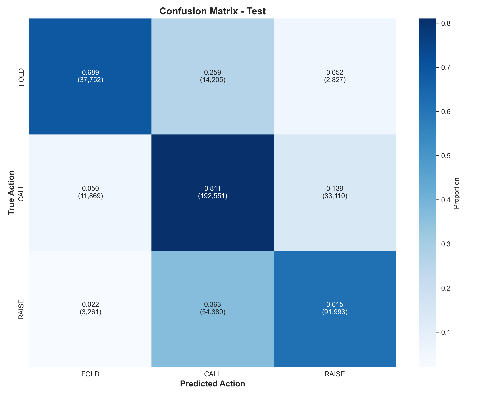
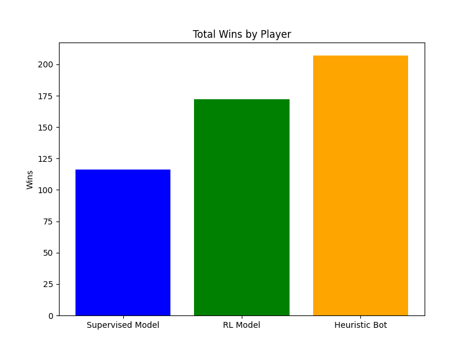
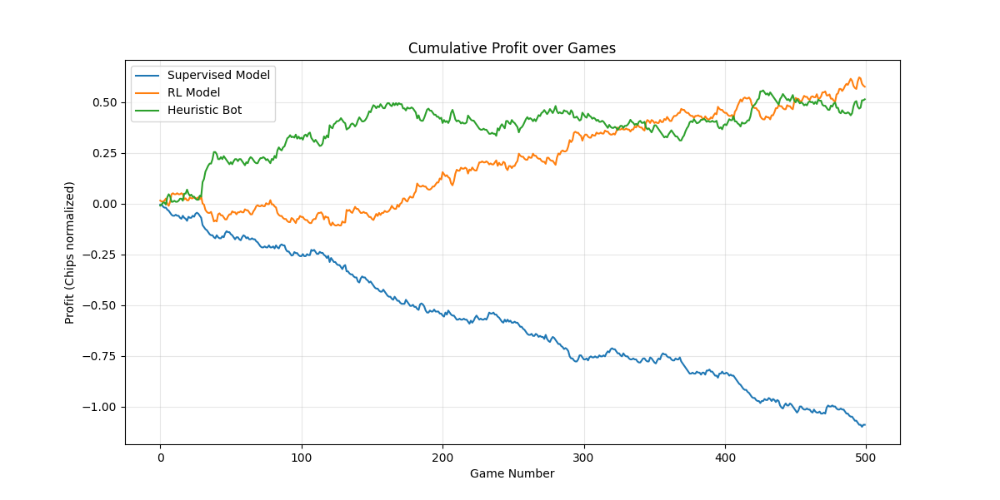

Poker AI
Transformer + Reinforcement Learning dla No-Limit Texas Hold'em
Inteligencja Obliczeniowa
Mateusz Kroplewski
Aleksander Olkowicz
A♠ K♥
Problematyczność pokera
Poker to jedno z najtrudniejszych wyzwań dla AI:
Niepełna informacja
Nie znamy kart przeciwnika
Losowość
Karty są rozdawane losowo
Blefowanie
Potrzeba modelowania przeciwnika
Ogromna przestrzeń stanów
~10160 możliwych stanów gry
Architektura Systemu
Dwufazowy pipeline treningowy
FAZA 1
Supervised Learning
Nauka z rąk ekspertów
(ACPC, HandHQ, Pluribus)
FAZA 2
Reinforcement Learning
Self-play z PPO
(50,000 epizodów)
Model uczy się jednocześnie wyboru akcji (fold/call/raise) oraz rozmiaru zakładu
Architektura Modelu
Karty + Stacki + Pot + Street
Historia licytacji (20 akcji)
Łączenie cech statycznych i sekwencyjnych
Fold | Call | Raise
Rozmiar zakładu
Parametry Modelu
| Parametr | Wartość |
|---|---|
| d_model | 512 |
| Attention heads | 8 |
| Transformer layers | 6 |
| FFN hidden dim | 2048 |
| Dropout | 0.1 |
Kodowanie kart: card_id = rank × 4 + suit → 16-dim embedding (8 rank + 8 suit)
Reprezentacja Stanu Gry
Static State (19 cech)
- 2 karty własne (ID: 0-52)
- 5 kart wspólnych (ID: 0-52)
- 6 stacków graczy (znorm.)
- Rozmiar puli (znorm.)
- Siła ręki (0.0-1.0)
- Street (one-hot: 4 dim)
Action Sequence (20×10)
- 20 ostatnich akcji
- Każda akcja: 10 wymiarów
- 6 dim: Indeks gracza (one-hot)
- 3 dim: Typ akcji (fold/call/raise)
- 1 dim: Kwota zakładu (znorm.)
Funkcja Straty
Multi-Task Loss
Laction
CrossEntropyLoss
α = 1.0
Lvalue
MSELoss (log-space)
β = 0.2
Outcome-Based Weighting
Wagi zależą od wyniku ręki - model uczy się agresywniej z wygranych decyzji
Dataset
Źródła danych
-
ACPC 2017
Annual Computer Poker Competition
Największe źródło danych, gry rozegrane w turnieju algorytmów pokerowych. -
HandHQ
Profesjonalne ręce heads-up
Historia gier graczy online. -
Pluribus
Model Facebook AI Research
Nieduży dataset wszystkich rąk rozegranych przez SOTa model facebooka. Nie został nigdy publicznie udostępniony.
Fold: ~53% | Call: ~27% | Raise: ~20%
Preprocessing w Rust
Wydajne przetwarzanie danych
Dlaczego Rust?
Dataset ważył 30GB po rozpakowaniu, rozbity na tysiące plików. Dodatkowo dane wymagały przetworzenia na format wymagany przez nasz model, co również wymagało symulacji gry, by wyciągnąć też wszystkie kroki pośrednie w danym rozdaniu jako przykłady treningowe. Przetwarzanie w Pythonie trwało by dniami.1. Parsowanie TOML/PHH ➔ Rayon (parallel)
2. Symulacja gry krok po kroku
3. Ekstrakcja punktów decyzyjnych
4. Kodowanie do tablic NumPy
5. Kompresja do formatu NPZ
Faza 1: Supervised Learning
Konfiguracja
| Epochs | 20 |
| Batch Size | 32-1024 |
| Learning Rate | 1e-4 |
| Optimizer | AdamW |
| Scheduler | ReduceLROnPlateau |
Metryki
- Accuracy (ogólna)
- Balanced Accuracy
- Per-class Precision/Recall/F1
- Value MAE (rozmiar zakładu)


Faza 2: Reinforcement Learning
Proximal Policy Optimization (PPO)
Self-Play Framework
- 15% gier: Random (eksploracja)
- 50% gier: Heurystyczny agent
- 35% gier: Poprzednie wersje modelu
Hiperparametry
- Epizody: 50,000
- PPO epochs: 6
- Clip epsilon: 0.25
- Learning rate: 2e-5
Reward Shaping w RL
Kształtowanie nagrody z uwzględnieniem siły ręki
if action == FOLD and hand_strength < 0.4:
step_reward += 0.02 # Bonus za foldowanie słabych rąk
# Zły fold (strach)
if action == FOLD and hand_strength > 0.7:
step_reward -= 0.05 # Kara za foldowanie mocnych rąk
# Nieudany blef
if action == RAISE and hand_strength < 0.2 and loss:
step_reward *= 1.2 # Wzmocnienie straty za przegrany blef
# Dobry value bet
if action == RAISE and hand_strength > 0.8 and win:
step_reward *= 1.1 # Bonus za wygrany value bet
Optymalizacje Wydajności
Zero-Copy Encoding
Prealokowane tensory GPU
In-place updates
Cached Forward
Przechowywanie (state, logits, value)
Reużycie w PPO epochs
Batched PPO
Jeden forward pass dla 50-200 kroków
Lepsza wykorzystanie GPU
Adaptive LR
Automatyczna korekta LR
na podstawie KL divergence
Wyniki: Supervised Learning

| Akcja | Accuracy | F1 |
|---|---|---|
| Fold | ~70% | ~0.72 |
| Call | ~65% | ~0.62 |
| Raise | ~75% | ~0.72 |
Krzywe Uczenia

Training Loss

Validation Balanced Accuracy
Wyniki: Reinforcement Learning

Model RL przewyższa model bazowy

Zastosowane Rozwiązania
1. Outcome-Based Weighting
Wagi przykładów treningowych zależą od wyniku ręki
2. Dual-Head Architecture
Jedna głowica dla akcji dyskretnych, druga dla ciągłego rozmiaru zakładu
3. Log-Space Value Prediction
Predykcja rozmiaru zakładu w przestrzeni logarytmicznej (range: 0.5x - 9000x pot)
4. Hand Strength Integration
Jawna cecha siły ręki (0-1) dodana do stanu statycznego
Podsumowanie
✓ Zaawansowana architektura Transformer z podwójnym enkoderem
✓ Innowacyjne ważenie strat oparte na wyniku ręki
✓ Efektywne RL z zero-copy encoding i batched PPO
✓ ~70% balanced accuracy w klasyfikacji akcji
✓ ~55% win rate po treningu RL
Kompletny system AI do pokera
od preprocessingu po deployment
A♥ A♠